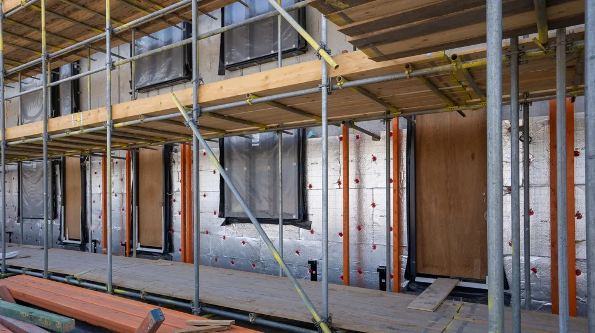

베란다 확장, 후회 없이 성공하는 5가지 필수 체크리스트
사진: Francesca Cinel / Pexels (무료 이미지, 출처 표기)
베란다 확장, 불법 아님? 법규 먼저 확인하기

베란다 확장 공사를 고민 중이라면, 가장 먼저 법적인 문제가 없는지 확인해야 합니다. 2005년 건축법 개정으로 발코니(통칭 베란다) 확장이 합법화되었지만, 모든 경우에 허용되는 것은 아닙니다. 특히 아파트의 경우, 비상 상황 시 대피 공간 확보와 소방 시설 설치 의무가 중요합니다. 거주하는 아파트의 구조와 연식을 먼저 확인하는 것이 좋습니다.
확장하려는 공간이 발코니인지, 아니면 베란다나 테라스 같은 다른 유형의 공간인지 명확히 구분해야 합니다. 일반적으로 아파트에서 주거 공간의 외부에 접한 공간은 '발코니'라고 부르며, 이 발코니를 거실이나 방처럼 사용하는 것을 확장이라고 합니다. 옥상이나 1층 등 건물의 지붕 위에 마련된 공간은 '베란다' 또는 '테라스'로 보며, 이곳의 확장은 불법이 될 수 있습니다.
확장 전 필수 법규 체크리스트 (2026년 11월 기준)
- 대피 공간 확보: 아파트의 경우, 베란다 확장을 하더라도 대피 공간을 반드시 확보해야 합니다. 이는 화재 등 비상 상황 시 이웃 세대로 대피하거나 구조를 기다리는 중요한 공간입니다.
- 스프링클러 설치: 특정 층수 이상의 아파트에서는 발코니 확장을 할 경우 스프링클러 설치가 의무화될 수 있습니다. 정확한 기준은 건축법과 소방 관련 법규를 따라야 합니다.
- 내력벽 철거 금지: 건물의 하중을 지탱하는 내력벽을 임의로 철거하는 것은 건물 안전에 치명적인 영향을 미치므로 절대 금지됩니다. 확장 시 구조 변경 범위에 대한 전문가의 진단이 필수입니다.
- 관리사무소 및 관할 지자체 확인: 아파트의 경우 관리규약에 따라 확장 공사 동의서 및 신고 절차가 필요할 수 있습니다. 관할 시군구청 건축과에 문의하여 정확한 법적 기준과 절차를 확인하는 것이 가장 안전합니다.
확장 후 편안함을 위한 필수 고려사항: 단열과 소방 안전
합법적인 확장만큼 중요한 것이 바로 단열과 소방 안전입니다. 베란다를 확장하면 외부와 직접 맞닿는 면적이 늘어나 단열에 취약해질 수 있습니다. 부실한 단열은 결로, 곰팡이, 난방비 폭탄으로 이어지므로 철저한 준비가 필요합니다.
특히 샷시(창호)는 단열 성능에 결정적인 영향을 미칩니다. 외창은 이중창 이상으로 설치하고, 단열 성능이 우수한 로이유리 등을 사용하는 것이 좋습니다. 벽면과 바닥, 천장에도 충분한 두께의 단열재를 시공하여 외부 냉기나 열기가 실내로 유입되는 것을 차단해야 합니다.
소방 안전은 절대 타협할 수 없는 문제입니다. 앞서 언급했듯이 대피 공간 확보와 스프링클러 설치 여부를 다시 한번 점검해야 합니다. 특히 대피 공간을 창고처럼 사용하거나 물건으로 가득 채워두면 비상시 제 역할을 할 수 없습니다. 확장 후에도 대피 공간은 비워두고 항상 접근 가능하게 유지해야 합니다.
베란다 확장 공사, 어떤 단계로 진행될까?
베란다 확장 공사는 생각보다 복잡한 과정을 거칩니다. 일반적으로 다음과 같은 단계를 통해 진행됩니다.
- 상담 및 현장 방문 견적: 전문 업체와 상담하여 원하는 확장 범위와 디자인을 논의하고, 현장 실측을 통해 상세 견적을 받습니다.
- 계약 및 공사 계획 수립: 여러 업체의 견적을 비교한 후 계약을 체결하고, 공사 일정 및 자재, 디자인 등 세부적인 공사 계획을 확정합니다. 이 단계에서 관리사무소에 공사 동의서 등을 제출합니다.
- 철거 및 폐기물 처리: 기존 베란다의 벽, 바닥, 샷시 등을 철거하고 폐기물을 처리합니다.
- 설비 및 단열 공사: 난방 배관 연장, 전기 설비 작업, 벽면/바닥/천장 단열재 시공 등 기초 공사가 진행됩니다.
- 샷시(창호) 시공: 새로운 샷시를 설치하여 외부와의 단열 및 방수 기능을 확보합니다.
- 마감 공사: 벽지, 마루, 타일, 조명 등 내부 인테리어 마감 작업이 이루어집니다.
- 준공 및 점검: 공사가 완료되면 최종적으로 하자가 없는지 점검하고, 필요한 경우 지자체에 신고 및 확인 절차를 거칩니다.
각 단계별로 꼼꼼한 확인과 소통이 중요하며, 특히 공사 중 발생할 수 있는 소음이나 분진에 대해 이웃에게 미리 양해를 구하는 것이 좋습니다.
비용 절감을 위한 현실적인 팁과 주의할 점
베란다 확장 비용은 평수, 자재의 종류, 시공 방식, 업체 등에 따라 천차만별입니다. 무조건 저렴한 곳만 찾기보다는 합리적인 선에서 안전하고 품질 좋은 시공을 선택하는 지혜가 필요합니다.
계약 시에는 반드시 '하자 이행 보증' 및 '사후 관리' 조항을 꼼꼼히 확인하세요. 추가 비용 발생 여지, 공사 지연에 따른 배상 문제 등도 명확히 명시하는 것이 중요합니다. 견적서에 모든 내역이 상세하게 기재되어 있는지 확인하고, 모호한 부분은 충분히 질문하여 명확하게 해소해야 합니다.
확장 공사 업체 선정 시 놓치지 말아야 할 것들
성공적인 베란다 확장의 절반은 믿을 수 있는 업체를 만나는 데 달려있습니다. 아래 기준들을 참고하여 신중하게 업체를 선정하세요.
- 정식 사업자 등록 및 건설업 면허 확인: 무등록 업체는 문제가 생겼을 때 보상을 받기 어렵습니다. '건설업 등록증' 등 관련 서류를 확인하세요.
- 충분한 시공 경험과 노하우: 베란다 확장 전문 시공 경험이 풍부한 업체를 선택해야 단열, 방수 등 기술적인 문제에 대한 이해도가 높습니다. 이전 시공 사례를 요청하여 확인해 보세요.
- 꼼꼼한 견적서와 상세한 상담: 견적서에 철거, 단열재, 샷시, 마감재, 인건비 등이 명확히 구분되어 있는지 확인합니다. 추후 추가 비용 발생 소지를 사전에 차단할 수 있습니다.
- 하자 보수 및 A/S 기간 명시: 공사 후 발생할 수 있는 하자에 대한 보수 기간과 절차를 계약서에 명확히 명시하는 업체인지 확인해야 합니다. 일반적으로 최소 1년 이상의 하자 보수 기간을 제공합니다.
- 계약서 세부 조항 꼼꼼히 확인: 공사 기간, 지연에 따른 배상, 추가 비용, 책임 범위 등을 명확히 기재한 정식 계약서인지 확인합니다. 구두 계약은 분쟁의 씨앗이 될 수 있습니다.
베란다 확장 공사는 단순한 리모델링이 아니라 주거 환경의 큰 변화를 가져오는 작업입니다. 충분한 정보 습득과 신중한 준비를 통해 만족스러운 결과물을 얻으시길 바랍니다. 정확한 법규 및 최신 정보는 국토교통부, 소방청, 그리고 거주하시는 지역의 시군구청 등 공식 기관에서 다시 한번 확인하시길 권장합니다.
🔗 이 글도 함께 보면 좋아요: 미니멀리즘, 후회 없이 비우려면? 시작 전 꼭 알아야 할 5가지
관련 추천 상품
이 포스팅은 쿠팡 파트너스 활동의 일환으로, 이에 따른 일정액의 수수료를 제공받습니다.